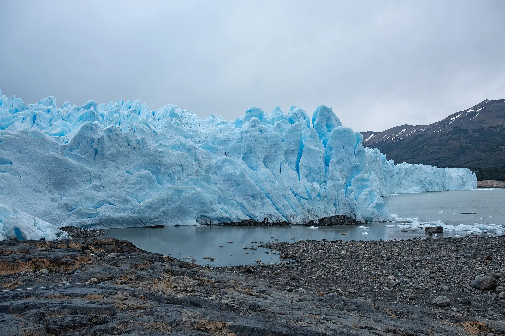
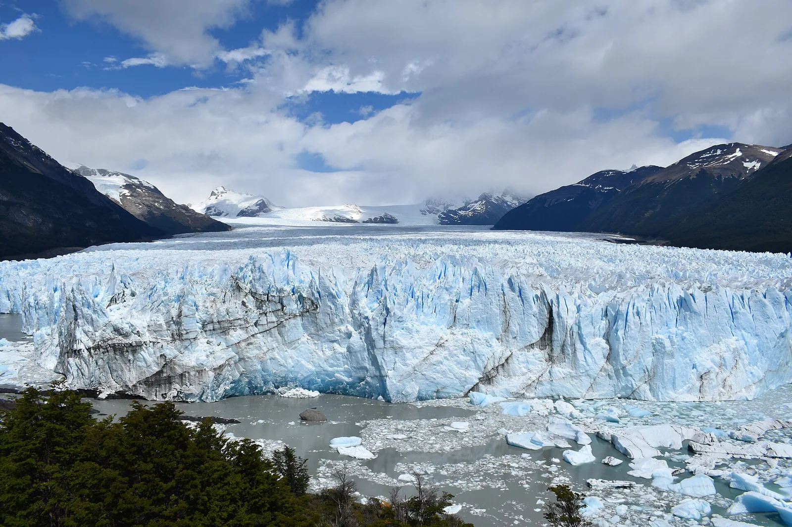

S5 · Sur
S5 · Süden
S5 · South
Glaciar Perito Moreno
y un glaciar gigante soltar pedazos de hielo del tamaño de una casa.
und einen riesigen Gletscher, der Eisblöcke so groß wie ein Haus fallen lässt.
and a giant glacier dropping blocks of ice the size of a house.
Información
El Parque Nacional Los Glaciares, en el suroeste de Santa Cruz, cubre 600.000 hectáreas. Los glaciares ocupan cerca de la mitad del área protegida, y la mayoría se alimenta del Campo de Hielo Patagónico Sur, el vestigio más extenso que dejó en Sudamérica la glaciación del Cuaternario.
El lago Argentino, de 160 kilómetros de largo, recibe el agua de deshielo. En su extremo tres glaciares desembocan juntos y sueltan al agua gris bloques de hielo del tamaño de una casa, que caen con un estruendo que se escucha a kilómetros.
En conjunto, el parque es una reserva enorme de agua dulce.
Information
El Parque Nacional Los Glaciares, en el suroeste de Santa Cruz, cubre 600.000 hectáreas. Los glaciares ocupan cerca de la mitad del área protegida, y la mayoría se alimenta del Campo de Hielo Patagónico Sur, el vestigio más extenso que dejó en Sudamérica la glaciación del Cuaternario.
El lago Argentino, de 160 kilómetros de largo, recibe el agua de deshielo. En su extremo tres glaciares desembocan juntos y sueltan al agua gris bloques de hielo del tamaño de una casa, que caen con un estruendo que se escucha a kilómetros.
En conjunto, el parque es una reserva enorme de agua dulce.
Information
El Parque Nacional Los Glaciares, en el suroeste de Santa Cruz, cubre 600.000 hectáreas. Los glaciares ocupan cerca de la mitad del área protegida, y la mayoría se alimenta del Campo de Hielo Patagónico Sur, el vestigio más extenso que dejó en Sudamérica la glaciación del Cuaternario.
El lago Argentino, de 160 kilómetros de largo, recibe el agua de deshielo. En su extremo tres glaciares desembocan juntos y sueltan al agua gris bloques de hielo del tamaño de una casa, que caen con un estruendo que se escucha a kilómetros.
En conjunto, el parque es una reserva enorme de agua dulce.
Vi el hielo —el mismo hielo que te dije que era hermoso— derretirse más rápido que nunca. Es desesperante, árbol.
Ich sah das Eis — dasselbe Eis, von dem ich dir sagte, es sei schön — schneller schmelzen als je zuvor. Es ist zum Verzweifeln, Baum.
I saw the ice — the same ice I told you was beautiful — melting faster than ever. It is maddening, tree.
El Campo de Hielo Patagónico Sur cubre unos 14.200 kilómetros cuadrados y reúne 48 glaciares principales; del lado argentino, el Perito Moreno, el Viedma y el Upsala. Entre 2000 y 2012 los glaciares de la región perdieron en promedio casi un metro de espesor por año.
El Perito Moreno es una de las pocas excepciones: se mantuvo estable mientras casi todos sus vecinos retrocedían y se adelgazaban. El hielo que se derrite más rápido que nunca es el de alrededor.
Un trabajo de investigadores del CONICET publicado en Nature Geoscience comparó por primera vez, con más de treinta mil modelos digitales de terreno hechos con imágenes satelitales, la evolución de todos los glaciares de los Andes entre 2000 y 2018.
El Campo de Hielo Patagónico Sur cubre unos 14.200 kilómetros cuadrados y reúne 48 glaciares principales; del lado argentino, el Perito Moreno, el Viedma y el Upsala. Entre 2000 y 2012 los glaciares de la región perdieron en promedio casi un metro de espesor por año.
El Perito Moreno es una de las pocas excepciones: se mantuvo estable mientras casi todos sus vecinos retrocedían y se adelgazaban. El hielo que se derrite más rápido que nunca es el de alrededor.
Un trabajo de investigadores del CONICET publicado en Nature Geoscience comparó por primera vez, con más de treinta mil modelos digitales de terreno hechos con imágenes satelitales, la evolución de todos los glaciares de los Andes entre 2000 y 2018.
El Campo de Hielo Patagónico Sur cubre unos 14.200 kilómetros cuadrados y reúne 48 glaciares principales; del lado argentino, el Perito Moreno, el Viedma y el Upsala. Entre 2000 y 2012 los glaciares de la región perdieron en promedio casi un metro de espesor por año.
El Perito Moreno es una de las pocas excepciones: se mantuvo estable mientras casi todos sus vecinos retrocedían y se adelgazaban. El hielo que se derrite más rápido que nunca es el de alrededor.
Un trabajo de investigadores del CONICET publicado en Nature Geoscience comparó por primera vez, con más de treinta mil modelos digitales de terreno hechos con imágenes satelitales, la evolución de todos los glaciares de los Andes entre 2000 y 2018.
Galería
Galerie
Gallery



Fuentes
Quellen
Sources
- UNESCO, Centro del Patrimonio Mundial, Los Glaciares National Park — https://whc.unesco.org/en/list/145/ consultado 2026-10-05abgerufen 2026-10-05accessed 2026-10-05
- SEGEMAR, Argentina, El Campo de Hielo Patagónico Sur. Un pasado, un presente… y un futuro incierto (PDF) — https://repositorio.segemar.gob.ar/bitstream/handle/308849217/1375/68%20-%20Campo%20de%20Hielo%20Patagonico%20Sur.pdf consultado 2026-10-06abgerufen 2026-10-06accessed 2026-10-06
- CONICET, Revelan cómo cambiaron los glaciares de la Cordillera de los Andes en los últimos veinte años — https://www.conicet.gov.ar/revelan-como-cambiaron-los-glaciares-de-la-cordillera-de-los-andes-en-los-ultimos-veinte-anos/ consultado 2026-10-06abgerufen 2026-10-06accessed 2026-10-06